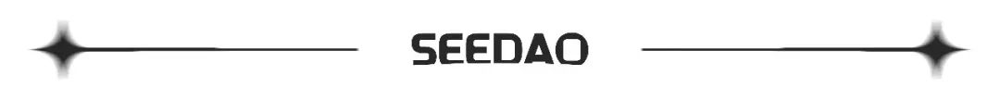

01
“这个时代最大的创造力的来源不在公司，而在社区。”
Ashley
欢迎来到SeeDAO Web3她声音第四期，我是今天的主持人Ashley。今天我们有幸邀请到了SeeDAO的创始人之一唐晗，来和大家一起聊聊女性创业的故事，在此之前，能先简短地介绍一下自己吗？
唐晗
大家好，我是唐晗，是SeeDAO的发起人之一。我2017年从学校毕业后的第一份工作是做区块链领域的记者。一年后，我离开了36氪，和朋友做了一家区块链媒介，那是我的第一次创业。大概就是从2018年开始，从此以后我就过上了每天只睡几个小时的生活，也从此开始了对身体的极限内耗的一个状态。
Ashley
所以你的第一次创业就是CryptoC 吗？可以和我们俩聊你的创业经历和心得吗？
唐晗
不是，我的第一次创业是个叫“碳链价值”的区块链媒体。其实2018年到2019 年对我来说是一个快速成长并逐渐看清楚这个行业的一个过程。但到了2019年底，我终于决定静下心来再去学点新的东西了，所以在2020年的时候我就决定去北大继续念书。这一年有个契机，我策划了一场加密艺术展，反响很好，那时候我有和白鱼聊到说：“我看到了一个趋势， NFT一定会崛起，不把这个势头抓住的话会很可惜。”
但随着深入探索，我逐渐找到了一个我深信且到现在还深以为然的一件事情—— NFT 项目的估值其实等于这个 NFT 社区的估值。我看到了这个时代最大的创造力的来源不在公司，而在于社区上。所以在2022年的七八月份的时候，我们就决定要做这样的一件事情，经过三个月的反复辩论、调研和筹划，终于在 11 月份的时候成型，然后 SeeDAO就诞生了。
SeeDAO诞生的意义对我来说是非凡的，而且我相信这个意义对于华语世界的Web3也是非凡的，它可能标志了一种范式的代选，虽然这种范式在它的摸索过程中充满了很多的险阻，但是市场上已经标注了一种想象——我们可以脱离公司这种形式，产生很大的影响力，获得资本市场的认可。
02
“这个方向很难得，我在大学找了四年，最后我找到了”
Ashley
好的，其实我也好奇，你大学后为什么会选择进入Web3呢？能聊聊你进入这个行业的契机和原因吗？
唐晗
其实我大学本科是在上海财经大学念的，但我本身是个很讨厌金融的人，我不能够接受为什么一定要抽象出一个理性人，然后解释这个世界如其所示的去运转，每个人都在算计个人的利益，我不太能够理解这件事情。
第二年，我去加拿大做交换，那时候妈妈每年都要从家里汇款过来，周期很长，而且一次的费用也很昂贵，那时候我就在想有没有更好的办法来解决这个问题。2015年的时候我开始了解到比特币，觉得很有意思，后来顺势就拿加密货币的估值去做了毕业论文。按理说当时我应该进入一家投资机构，但当时的币圈实在是太乱了，恰巧我对文字又非常的热爱，所以最终选择了做媒体，来观察和报道这个行业，去做更加深入的研究。
其实，我觉得这是一种很奇妙的缘分。当我看到比特币的白皮书的时候，我就知道这是我一直在寻求找到的东西，它指引了一个我可以并且愿意去实践的一个方向。这个方向很难得，我在大学找了四年，可能都是在找这样的一个东西，最后我找到了。这就是我进入到这个行业的一个契机和原因。
03
“我想呼吁更多的女性去向前冲锋，完全不需要谦让！”
Ashley
对的，我记得之前聊天的时候你有说过，最初SeeDAO的女性数量是很多的，后来很多女性开始渐渐淡出核心圈。可以分享一下是什么原因导致的或者中间的一些故事吗？
唐晗
我觉得可以从最开始我进入到这个圈子对男性和女性的观察开始讲起，从2017年我进入到这个圈子之后，我采访的女性的数量两个手掌应该是可以数过来的。就包括来自于中国和西方都是一样的。这个事情不是仅在中国这样，而是说整个圈子都是这样。
原因很简单，因为当时这个圈子的主要人群，要么是做金融的，要么就是技术人员等等，其实TA们的面貌主要都是男性。最开始的区块链世界，我觉得它不是一个感性的世界，它是一个高度理性的世界，而且它对未来需要有一种极大的风险偏好，或者说更类似于是一个赌徒的世界，至少在 2017 年的时候是非常疯狂的，而那个江湖其实更多的是属于男性的。
倒不是说大家有意去歧视女性，但是一旦重要话语权都被男性所垄断，那么在招人的时候他们是更愿意去提携男性的，或者是认为男性更有能力去担当某些位置，而女性更可能被放在偏策略营销和被凝视的这种岗位上的时候，这种兄弟文化就已经在这里了，它会对其他想要去展现自己和不服从这套秩序的女性产生一定的阻碍。
这大概是行业的一种现状， 关于这件事情，Blankless DAO曾写过一篇文章，大量抨击了整个区块链行业的兄弟文化。那篇文章其实也发出了一种号召——希望能够有更多勇敢的女性认识到 Web3其实很重要，呼吁更多女性站出来，先冲在最前线，这些女性可能会带动其他女性一起进来。这也是我最开始发起CryptoC的一些征兆。
其实，在现实中我发现很多女性的胆魄和见识完全不输给男性，但是为什么在涉及到关键的治理权和领导项目的气势上，女性会逐逐往后退，并尝试把这个位置给让出来？这其实是我一直在思考的问题，我觉得这可能是由于现实中的一种惯性，女性想要往后退的一种惯性，现实中是如此，可能在SeeDAO中也是如此。所以，我想呼吁的是——完全没有必要这样做。因为SeeDAO本来就是为了建造一个新的世界，所以完全没有必要往后退。而且，我接下来也想呼吁更多的女性去往前更进一步地冲锋，完全不需要谦让！
04
“没有一种地位是被人施舍的，那种地位是不牢固的。”
Ashley
长久以来，女性在创业过程中一直面临着许多不公对待，比如说很多投资人或用户，对女性的能力有种天然的不信任感。所以，关于这个问题，你能谈谈你的看法吗？
唐晗
我觉得这个事情是有一个过程的，在我看来，首先需要增加这个行业的女性数量，其次是女性 leader 的数量，我非常想去做到这两件事情，因为如果不增加这个行业女性的数量，它就始终是一个兄弟文化。只有在这个基础上，我觉得才能解决个人的事情，因为个人事情很难在一个大的这种环境下去做到解决。
Ashley
即使在如今这样大环境已经友好很多的情况下，我们看到的女性创业者依然很少，你可以分享一下你的观察吗？是女性没有创业的想法吗，还是说女性缺乏野心。你是怎么看待这个问题的呢？
唐晗
首先是野心，我觉得野心很重要，我觉得东亚的女性普遍存在一种谦让的“美好品质”。我说的野心并不是说女性需要有更多对权利和钱的欲望，而是说我们完全可以想象一个由女性去发挥自己作用的世界，而不是一个只通向“家庭”的世界。而我们的能力可能刚好被这个时代所需了，这是一件很重要的事情。
第二点，既然我们的教育水准值和男性是一样的，而且女性中的很多人其实已经不输给男性了，那么我们完全可以冲到最前线，为什么不呢？
第三点，从一个玄学角度上来讲，马上就走离火运了，女性就是应该产生 leader 的这样一个时代到了。
第四点，如果我们一直在提男女平权，那我觉得对应的一个东西是女性应该展现出自己去承担责任的能力和野性，因为从来没有一种地位是被人施舍的，那种地位是不牢固的。
其实，我所说的要做一个女性leader ，不是你一定要有宏图伟业，而是说当你积极去探索自己的时候，你才能做出和过去不一样的东西。而当你做出了那样的东西时，你自然就获得了一定的领导权利。因为你担负起了一些东西，那个状态是很舒服、很好的。那个时候你可能整个人都在发光，我在SeeDAO里看到过这样的女性，她们在发光，我觉得这个状态完全是很好的。
Ashley
对于女性在未来的发展，你有什么看法或展望吗？
唐晗
第一点，我觉得女性在媒体中的位置和在未来可发展的事情其实被低估了。第二点，身心灵在我看来是也是一个很大的事情，而在这个领域许多女性已经踏入其中，女性对自己感知能力的应用，这一点可能也被低估了。
内容来源|Suzie
设计排版|Suzie
审核|Ines

